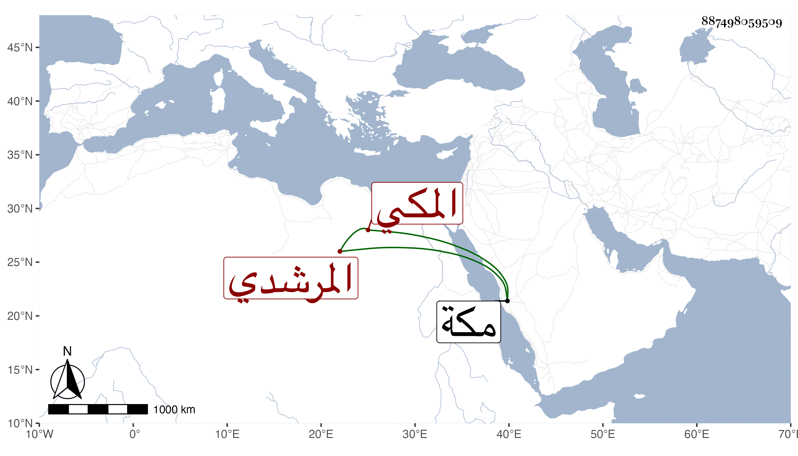

0902Sakhawi.DawLamic.ITO20230111-ara1.EIS1600.887498059509
Biography ID: 887498059509
850
أم الحسين بالتصغير ابنة الشهاب أحمد بن إبراهيم بن أحمد بن أبي بكر بن عبد الوهاب المرشدي المكي ، اجاز لها العز بن جماعة الصغير في سنة خمس عشرة . ماتت بكرا في صفر سنة أربع وثلاثين بمكة . أرخها ابن فهد . وقال ان أخاها أبا بكر لم يجب من سأله تزويجها .
